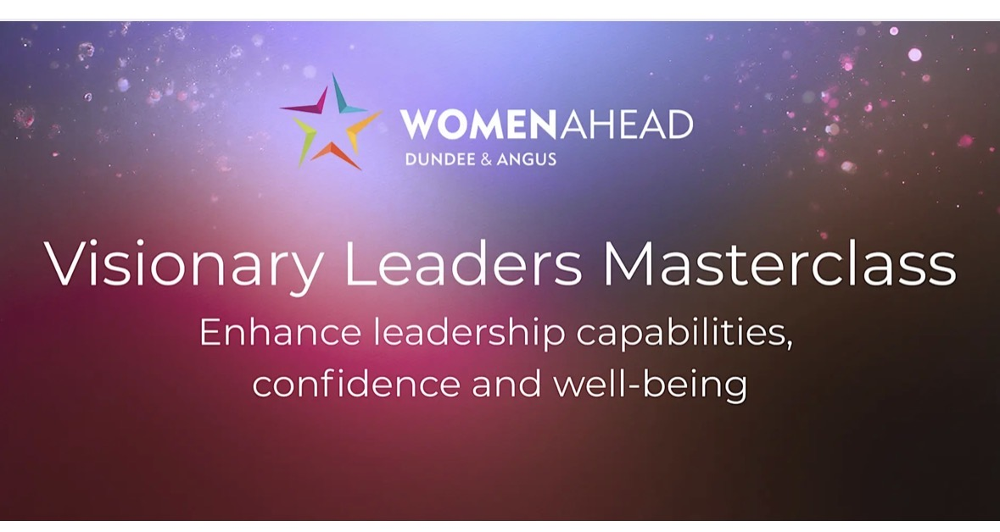

Women in business
The diary’s full — if you know where to look
City Ladies, WIBN, Women Ahead, Women in Property, Women in the Law and more — breakfasts through to galas, across the UK.

Women in business
City Ladies, WIBN, Women Ahead, Women in Property, Women in the Law and more — breakfasts through to galas, across the UK.
